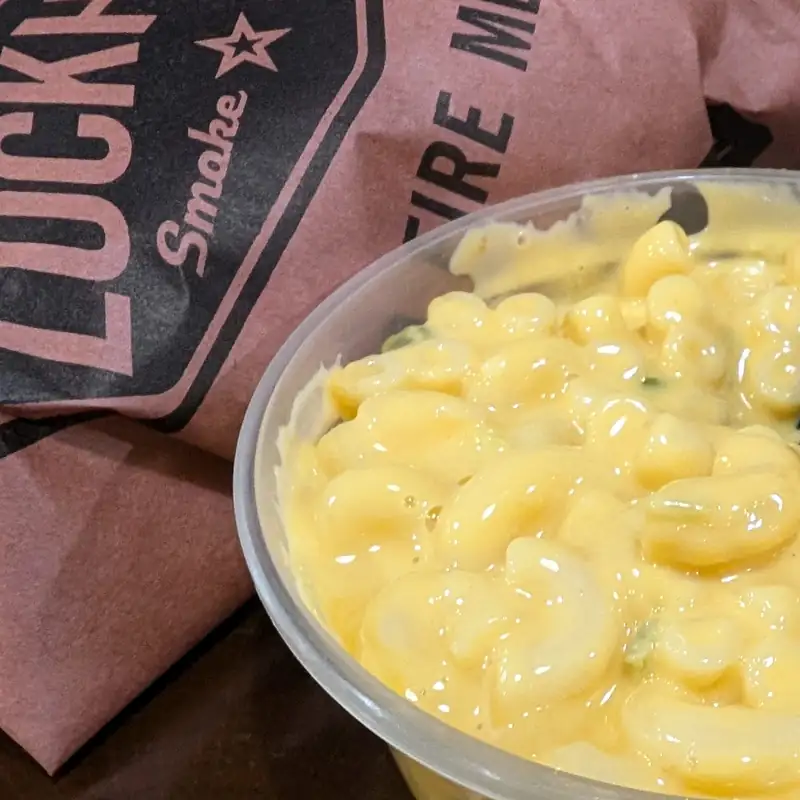
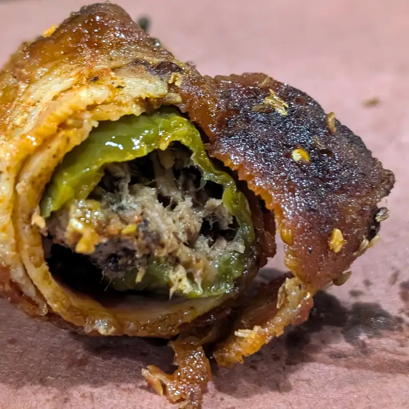
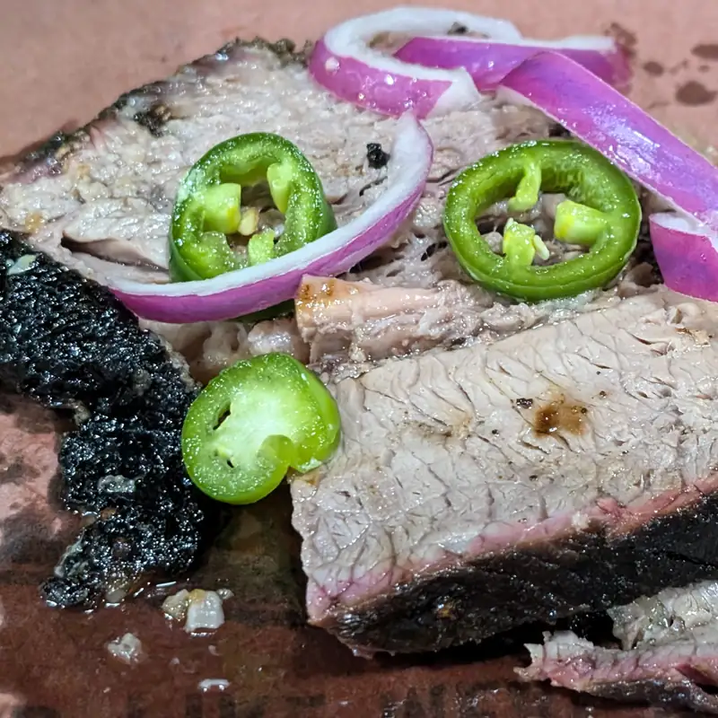

Restaurantes - Lockhart Smokehouse, Plano TX
Esta era una de esas veces en que los compañeros de trabajo (sí, si tengo trabajo de día... chale.. ) se ponen de acuerdo, y rara vez... te incluyen!.. pero claro que cuando llega el día, se te olvida e igual que todos los demás días te llevas lonche.. y no solo eso, sino que te comes tu lonche temprano!.. bueno, llega la hora de la comida y dicen "vamos".. y pues.. ayDíomío... nimo'o de decir que no, además de que era a este lugar tan famoso por ser bueno y casi casi un pecado no haberlo probado después de tanto año en la ciudad.
Se trata de un lugar de bbq texano muy tradicional, y muy bueno.. ok, eso dicen; pero esa fama no existe nom'as porque sí... en realidad si está bueno. Y más si lo comparas con lugares como Dickies o Spring Creek que suelen ser más comerciales. Lo que sí es cierto es que es... CARO!!! por lo que pedí de ~1/3 de libra de brisket, un mac&cheese, un popper y refresco... casi $30!!! ssuppppmmmmaadd... lo bueno es que era cerca del día de paga. Cuando te acercas al lugar, nisiquiera tienes que entrar, te da el aroma de la madera y la carne ahumadas. Un leve aroma de la manteca de res y cuando entras, esos aromas solo se intensifican y se les agrega el aroma a un lugar donde se ha servido carne grasosa, ahumada y sabrosa durante años; la madera un poco sudada en su propia salsa barbecue.
Y bueno pues... empezando con los antojos y la neta.. ventas de oportunidad. No iba a pedir mac&cheese, pero tenían un letrerito que decía "spicy mac&cheese" y como buen mexicano.. "que tan spicy puede estar?" ps lo pedí...

{kind=link}
spicy? nah... bueno? sí.. los macarrones en su punto, la salsa de queso también, nada grumosa, ni super-densa que se convierte en un ladrillo cuando se enfría, y tampoco aguada que se queda como sopa en el platito. Recomendado.. 9/10.
También tenían estos... Lockhart popper, creo que les llamaban. Un jalapeño relleno de brisket y queso, envuelto en tocino y ahumado; una f n delicia.. bueno, ok para mis gustos le sobraba tal vez la salsa bbq que le ponen junto con el brisket del relleno, pero se lo pasamos porque uno es.. "sensible" a lo dulce, pues.
 {kind=link}
Y la piece de resistance : el brisket.. al menos en Texas, el brisket es la carne con la que será juzgado cualquier restaurante de bbq, sin duda. Y el brisket de Lockhart? Bueno, bastante bueno, para ser de restaurante, donde tienen que haber ahumado las carnes bastante tiempo antes, y tan solo por estar manteniendo la temperatura a algo comible, ya se está perdiendo líquido poco a poco. Sí, debo admitir que la carne magra estaba de buena textura y muy buen sabor, y la no-magra... ni se diga! ... sí... podría tener más jugosidad? sí... podría tener más .. no se... sazón? sí, también. He probado alguna mejor en Dallas? tal vez, pero no son muchas, y tal vez solo la del hard 8 le llega.
 {kind=link}
Y qué? vale $30 "toda" esa comida? ... si fueran alrededor de $20, lo aceptaría con gusto, pero a ese precio, podría ser un... 10% mejor, tal vez.